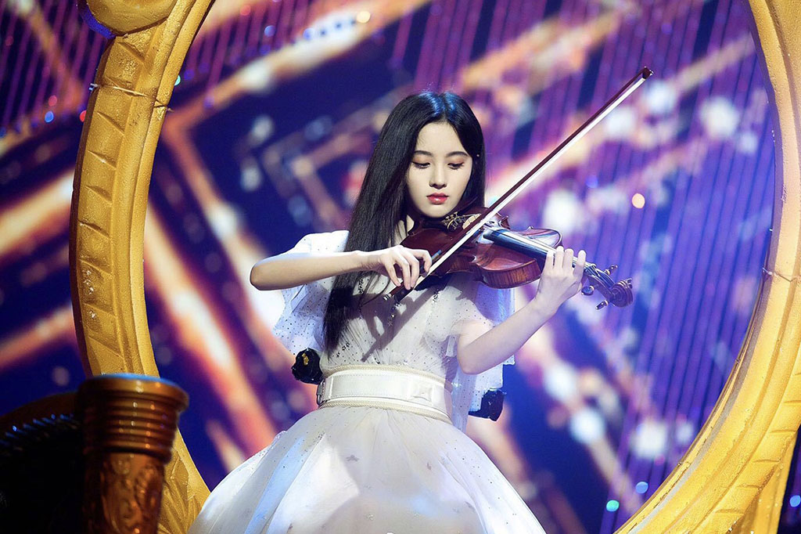
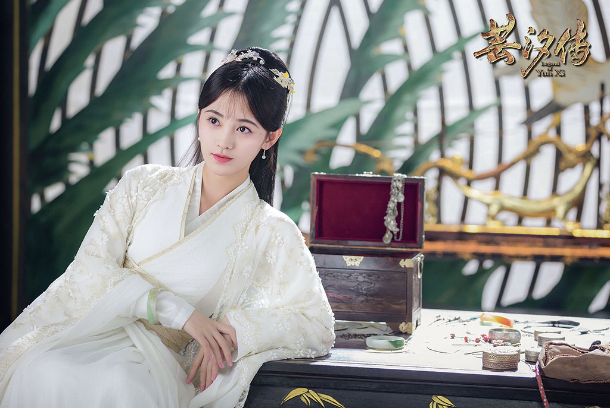

24日，《快乐中国毕业晚会》在湖南长沙举行。鞠婧祎携手马雪阳，与周洁琼，刘泳希上演中西乐器大对决，演绎多首名曲串烧，点燃全场。
节目中，鞠婧祎身穿金色纱裙，姿态优雅，袅娜娉婷，清新大方。本次晚会的中西对决秀也是鞠婧祎首次出演的小提琴秀，此前虽一直通过个人微博发布练琴视频，但从未公开表演。此次参加音乐秀并演绎高难度曲目，让观众惊艳不已。
另外，由鞠婧祎主演的《芸汐传》亦将在今晚上线。《芸汐传》讲述的是太医之女韩芸汐（鞠婧祎 饰）嫁入王府后为解宿命身世而展开的多舛故事，剧中韩芸汐独立执着，行医济世，展现了一个独立要强的形象。甜爽剧情加上高颜值阵容，让人更加期待鞠婧祎在今夏的亮眼表现。
